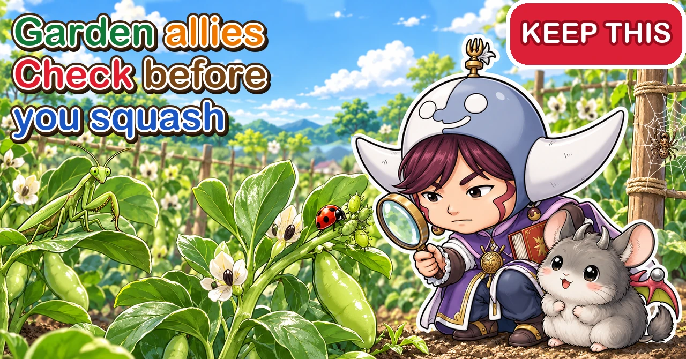
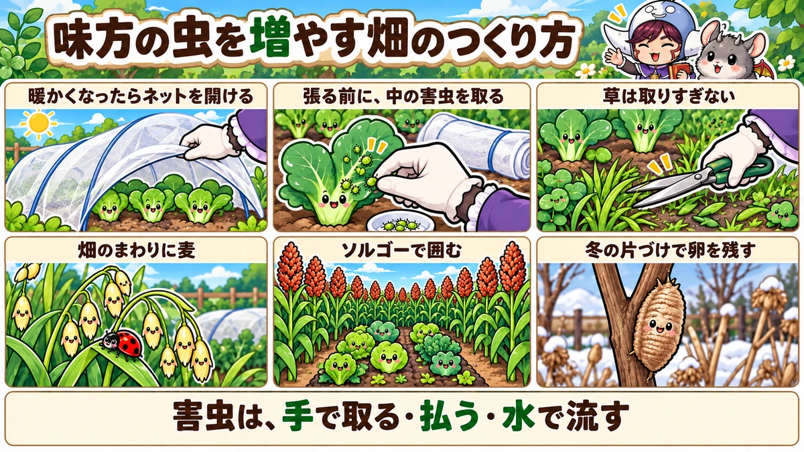

Beneficial insects 🐞 Check before you squash

🐞 "Is this spiky black thing on my beans a pest?"
🐞 "I sprayed everything, and the aphids came back worse."
🐞 "I found a fat white grub in the soil — should I get rid of it?"
Hello, I'm Eiko. Eight years of growing vegetables organically and without pesticides, and a teaching licence in science.
When we find an insect in the garden, the first thought is often "get rid of it". But not every insect out there eats vegetables. Some eat the pests, and some carry pollen so that fruit can set. Kill those allies too, and pests can end up multiplying faster. This article covers how to recognise the allies, how to tell them from look-alike pests, how to make a garden they want to live in, and what to leave alone when you tidy up for winter.
Where you are: the species named here are the ones common in Japanese gardens. Your local ladybirds, hoverflies and ground beetles may be different species, but the groups and the way to tell friend from foe are the same almost everywhere. The look-alike pest ladybird here is the 28-spotted ladybird of Asia; North American gardeners have a close relative, the Mexican bean beetle, that you tell apart the same way. Months are for central Japan.
The essentials: tell ladybirds by shine, not by spots — dull, hairy ones eat potato and aubergine leaves. Leave spiky black ladybird larvae alone. Don't keep nets and covers shut once it warms up, don't strip every weed, and don't spray all over. Pick pests off by hand, brush them off, or wash them off.
① The main allies at a glance
Insects that eat pests
- Ladybirds (seven-spot and others): adults and larvae both eat aphids
- Hoverflies: the larvae eat aphids; adults drink nectar and carry pollen
- Lacewings: the larvae eat aphids and other small insects
- Parasitic wasps (aphid parasitoids and others): lay eggs in aphids and other pests; the larva grows inside and kills its host
- Paper wasps: catch caterpillars to feed the grubs in their nest
- Spiders: catch flying insects in webs, or hunt on leaves
- Mantises: wait in ambush on leaves and seize insects
- Ground beetles: eat other insects and their larvae on and in the soil
- House centipedes: eat small insects on the ground and in dark corners
- Dragonflies: catch small insects in flight
Insects that help pollinate
- Bees: honeybees, bumblebees and others
- Flies: hoverflies and their relatives
Strawberries, watermelons, pumpkins and tomatoes don't set fruit unless pollen reaches the female parts of the flower. Bees and flies carrying pollen from flower to flower are what make the fruit.
Not insects, but allies
- Frogs, lizards and geckos: eat garden insects
- Earthworms: eat fallen leaves in the soil and make it crumbly with their casts
- Birds: eat caterpillars (but may also eat fruit and seeds)

What this diagram says （図解の文字）
- The main allies in the garden
- "Ladybird: eats aphids" ／ "Hoverfly: larvae eat aphids" ／ "Spider: catches flying insects" ／ "Mantis: catches insects on leaves"
- "Paper wasp: catches caterpillars" ／ "Ground beetle: eats insects in the soil" ／ "Parasitic wasp: lays eggs in aphids" ／ "Bees, flies: carry pollen"
- "Kill the allies too, and pests multiply instead"
② Telling look-alikes apart
Ladybirds and the 28-spotted ladybird
Some ladybirds eat vegetable leaves. In Japan the main one is the 28-spotted ladybird (nijuyahoshi-tento).
- Ally: a glossy body that shines; no hairs
- Pest: fine hairs all over, so it looks dull and matt; lots of black spots (about 28)
Shine is the surest test. Helpful ladybirds come with no spots, two, seven, or nearly twenty, in red, black, yellow and more — so ignore the spot count and the colour, and look for gloss.
The pest ladybird eats the leaves of aubergines, potatoes, tomatoes and their relatives, leaving a fine, net-like pattern of feeding. Ones that build up on potatoes often move on to aubergines. When you see that netted damage, look nearby for adults and larvae and remove them.
Spotting the pest ladybird
- Leaves scraped into fine white stripes, like lace: feeding by adults or larvae
- Clusters of dozens of small yellowish eggs on the underside of a leaf
- Small spiny larvae, cream to brownish, under the leaves
They lay many eggs at once. Once the larvae hatch, leaves are eaten till you can see through them, and on aubergines even the skin of the fruit gets grazed into an unsightly mess. They build up especially from summer to autumn; when you find an egg cluster, remove it with the leaf. At the egg stage they're hard to tell from helpful ladybird eggs, so treat clusters on aubergine or potato leaves with feeding damage nearby as the pest.
A ladybird that eats mildew
A small all-yellow ladybird found in Japan (kiiro-tento) eats powdery mildew fungus. If you see it on cucumber or pumpkin leaves, leave it. (In Europe, the 22-spot ladybird does the same job.)
Chafer grubs and fly larvae
Digging, you may turn up pale grubs. They look alike, but some eat vegetable roots and some eat other insects.
- Chafer grub (pest): curled into a C; brown head; three pairs of short legs at the front; darker at the rear
- Fly larvae (often allies): no legs; body stretched out
Chafer grubs eat the roots of new transplants and young seedlings — remove them. Legless larvae are often predators of other insects, so put them back in the soil.
Ground beetles and cockroaches
Ground beetles are black and glossy, and their resemblance to cockroaches gets them a bad name. But both adults and larvae eat other insects and grubs on and in the soil. Leave them be.
Wasps and bees
Wasps can be scary, but paper wasps hunt caterpillars and tiny parasitic wasps deal with aphids. Honeybees and bumblebees pollinate. Don't wave them away; just work calmly around them. If a hornet or paper-wasp nest near the house is a danger, don't tackle it yourself — ask your local council or a professional.
An insect not to touch
A small, slender orange-and-black rove beetle (Paederus) eats tiny soil insects, but its body fluid causes red swelling and blisters on skin. Don't touch it with bare hands or squash it.
③ When you're not sure
Is there feeding damage?
If there are holes or chewed patches nearby and the insect is on them, it's probably a pest. An insect walking over undamaged leaves may be an ally hunting for prey.
What is it next to?
An insect among a dense colony of aphids may well be there to eat them: a ladybird or its larva, or a hoverfly larva.
Wait a little
Instead of acting at once, watch for a day or two. You'll often see whether it's eating leaves or other insects. Taking a photo on your phone and looking it up later works well too.
And ants?
Ants guard aphids in return for the sweet honeydew they produce. With lots of ants around, ladybirds struggle to get near. Ants rarely eat vegetables themselves, but where ants are busy, aphids are usually busy too — so deal with the aphids.
④ Getting to know the main allies
Ladybirds
Adults and larvae both eat aphids in large numbers. The larvae are dark, with spiky bumps, and look nothing like ladybirds. If you see these larvae or their pupae among aphids, leave them.
Spiders
Spiders that spin webs in corners, on canes and on netting catch flying insects. Others don't spin webs at all and hunt on the ground or on leaves; the small jumping spiders that hop about on foliage pick off tiny insects there. None of them eat vegetables. Webs on canes or nets that aren't in your way are worth leaving — they reduce pests.
Mantises
Among the best hunters of all insects, mantises lie in wait on leaves. In early summer you'll see tiny ones just out of the egg case; small ones eat small insects, and bigger ones bigger prey. They never eat vegetables, so treasure them.
Hoverflies
Small yellow-and-black striped flies that look a little like wasps. You often see them hovering, almost still in the air, round flowers. Adults feed on nectar and pollen and carry pollen as they go. The maggot-like larvae hide among aphid colonies, eating aphid after aphid. A slender green or brownish larva by the aphids may well be a hoverfly. Despite looking like wasps, they can't sting.
Ground beetles and centipedes
Both live on and in the soil and in dark corners, eating other insects. If they appear when you dig or lift mulch, there's no need to chase them out.
Dragonflies
Dragonflies snatch small flying insects in mid-air. From late summer into autumn you'll see plenty over the garden.
Bees and flies that pollinate
From spring through the rainy season, bees and flies visit strawberry, watermelon, pumpkin and tomato flowers and carry pollen. In wet weather pollen doesn't move easily and fruit sets poorly, so these insects matter even more. Where insects are scarce you have to pollinate by hand — but if you can't get to the garden every day, it helps to leave it to them.

What this diagram says （図解の文字）
- Telling look-alikes apart
- "Ally: glossy" ✓ ／ "28-spotted ladybird: not glossy" ✗
- "Chafer grub: eats roots" ✗ ／ "Legless larva: often an ally" ✓
- "Ladybird larvae are allies too"
- "Judge by shine, not by the number of spots"
⑤ Making a garden allies want to live in
1. Don't leave nets and covers on for good
Insect mesh and plastic covers keep pests and cold out. But left on once it's warm, the inside becomes a comfortable home for pests, and the allies outside can't get in. When spring warms up, open the sides or take the covers off during the day so allies can get in. Ideally, open and close them often: shut on cold nights and mornings, open in the warmth of the day.
2. Remove pests before you put the net on
Net plants that already have pests on them and you create an enemy-free paradise where pests explode. Check the plants and clear them first.
3. Keep the allies inside the net
If ladybirds or mantises are inside the net, leave them there. A mantis you find elsewhere in the garden can be moved inside to eat the small insects.
4. Don't over-weed
Weedy margins house pests, but also allies. Strip them bare and the allies have nowhere to live. One approach: weed right next to the vegetables, and keep the margins cut short rather than cleared. Grasses are especially useful — the insects that live on them rarely attack vegetables, so they feed your allies.
5. Don't spray all over
Insecticides sprayed widely kill the allies along with the pests. With no allies left, survivors and new arrivals multiply all the more easily. In a home garden, rely mainly on picking pests off and washing them off.
6. Plant things round the edge that attract allies
Plants grown round a garden or along paths to protect the vegetables are called "banker plants".
- Oats and other cereals: the aphids on cereals are different species from those on vegetables and won't move across. They feed ladybirds and other allies, which in time come for the vegetable aphids too
- Sorghum: a tall grass. Grown round aubergine and pepper beds it houses allies and also screens and shelters from wind
- Sunflowers: a tall ring of them breaks the wind and is said to intercept incoming insects
- White clover: a legume; its aphids feed ladybirds and other allies
- Marigolds, buckwheat and other flowers: said to draw allies looking for nectar and pollen
7. Don't plant them too close
Many banker plants grow tall, and right next to vegetables they block light and air. Plant them round the outside of the bed, a little way off. On an allotment, keep them from spreading into your neighbour's plot.

What this diagram says （図解の文字）
- Making a garden that keeps allies
- "Open the net once it's warm" ／ "Remove pests before you net" ／ "Don't over-weed"
- "Cereals round the edge" ／ "Surround with sorghum" ／ "Leave egg cases when tidying in winter"
- "Deal with pests by hand: pick, brush, wash"
⑥ Removing pests while protecting allies
Pick them off, brush them off
The kindest method for allies is picking pests off by hand. Aphids can also be brushed off with a soft brush — support the stem as you do so it doesn't snap.
Wash them off
Spraying water under the leaves knocks back aphids and spider mites. Water barely affects allies.
If you spray, aim carefully
Any spray hits the allies sitting on the plant along with the pests. Don't drench the whole plant; spray a little, only where the pests are. Even sprays made from natural materials can damage vegetables if overused, so stick to the stated strength and don't spray too often. Oil and soap diluted in water is also known as a home-made spray, but under Japan's pesticide rules cooking oil and soap solutions aren't approved for pest control.
Don't over-coddle
Too much water and feed make soft, lush leaves that draw pests. Crowded leaves block air too, so pests and disease build up. Remove old lower leaves and congested shoots to open up space round each plant.
⑦ Allies crop by crop
Aubergines and peppers
Sorghum round the bed is said to house allies that help keep aphids, spider mites and thrips down. Marigolds nearby are also recommended. Tell the 28-spotted ladybird by its dull coat and remove it.
Broad beans and peas
Aphids love the shoot tips. If ladybirds have turned up, leave them. Broad beans kept wrapped in netting for warmth or protection get warm inside, and aphids can appear earlier and in larger numbers than outside. As it warms, open the net by day to let allies in.
Strawberries
When the flowers open in spring, honeybees and hoverflies carrying pollen help the fruit form a good shape. Where insects are scarce, brush each flower with a soft paintbrush to pollinate by hand. Check from winter for aphids hiding in the crown and under leaves.
Cucumbers, pumpkins, watermelons
Pumpkins and watermelons need pollen carried from male to female flowers. When bees and flies do it, you're spared hand-pollinating. Cereals sown between the beds attract allies, and the fungi living on them are also said to help suppress powdery mildew. If you see the yellow mildew-eating ladybird, leave it.
Cabbage, broccoli, Chinese cabbage
These attract caterpillars such as cabbage white larvae. Paper wasps carry caterpillars off to their nests, and tiny parasitic wasps lay their eggs inside caterpillars and kill them.
⑧ Sowing cereals and sunflowers
Oats and other cereals
In a corner of the garden or along the paths between beds, loosen the soil into a shallow drill and sow in a line. The seeds are big, so cover with about 1 cm (½ in) of soil and press down lightly. They germinate easily and can be sown any time from spring to autumn. They need almost no watering, and plants on paths don't mind a bit of trampling. They die back naturally in the heat; left on the path, they make a free straw mulch.
Sorghum and sunflowers
They grow tall, so plant them round the garden, a little way from the vegetables. On windy days they act as a windbreak. Keep them away from the vegetables so they don't block light and air.
Clover can spread too far
Left alone, white clover and other legumes spread and spread. Mow them regularly to keep them out of the beds. If you won't have time to manage it, better not to plant it.
⑨ Winter tidying and allies
Insects spend the winter here too
Insects don't vanish in winter. Pests and allies alike overwinter as eggs, pupae, larvae or adults in long grass, under fallen leaves and in the soil.
Winter jobs that reduce pests
- Dig over the soil and look for pest grubs and pupae overwintering in it
- Remove weeds that shelter pests
- Clear crop debris, dead leaves and unused materials where pests can hide
Leave the allies
When you tidy for winter, leave these where they are:
- Ladybirds huddled together under long grass or fallen leaves
- Brown, spongy lumps on twigs or canes — mantis egg cases
- Legless larvae that turn up in the soil (fly larvae and similar)
Watch for aphids hiding over winter
Even in winter, aphids hide under weed leaves, in the crown of strawberry plants and in the shoot tips of broad beans. Broad bean tips under winter covers are warm and a favourite hiding place. Find and remove them in winter, before they explode in spring.
⑩ March rounds
Overwintered aphids wake up
In March, aphids that sat still all winter get busy again. Look carefully at strawberry crowns and leaf undersides, and at broad bean shoot tips and new growth.
Remove dead leaves
Dead leaves at the base of strawberries and other plants are hiding places for pests. Remove them to let the air through. If you use scissors, wipe them first so you don't spread disease.
Weed round the vegetables
Small weeds round beds and mulch planting holes soon get big and harbour pests. Pull the ones next to vegetables while they're small.
Baby mantises and spiders
In spring mantis egg cases start to hatch and tiny mantises appear. Spiders, centipedes and ladybirds get moving too. If you see them, let them be.
⑪ Enjoy watching the insects
Take a magnifying glass
Ladybird larvae and pupae, aphids parasitised by wasps, tiny spiders under leaves — the garden is full of small creatures you only notice when you look closely. Magnified with a hand lens or your phone camera, the difference between pests and allies becomes much clearer.
Keep a record
Note when, on which crop, and what insects you saw, and next year you'll know when to look. Once you know when ladybirds start building up and when aphids take off, you can act earlier.
⑫ Through the year (central Japan)
- February–March: remove overwintered aphids before they multiply; ladybirds start moving
- March–April: open nets and covers on warm days to let allies in; sow oats round the garden
- May–June: leave ladybird larvae and pupae; remove 28-spotted ladybirds; look after the baby mantises
- July–August: spiders and mantises grow big and eat plenty; sorghum fills out round aubergines and peppers
- September–November: clear pests from autumn crops before netting them
- December–January: when tidying, leave ladybird huddles and mantis egg cases
⑬ Where advice differs
Should weeds be kept or removed?
Weeds house allies but also pests. Some advice says clear them in your winter tidy; other advice says don't over-weed. Both have a point. Divide by place: remove weeds right by the vegetables and weeds crawling with pests, and keep the margins cut short.
Are sticky traps OK?
Yellow and blue sticky traps are handy for catching and monitoring pests, but they also catch bees and other harmless or helpful insects. If you use them, use few, for a short time.
Do banker plants work in a home garden?
They're mostly used on large fields. In a small garden there's limited room, so don't expect dramatic results. If you have a little space on paths or between beds, they're worth a try.
Do flowers really bring in more allies?
Marigolds, buckwheat and sunflowers are said to draw hoverflies, bees and other allies looking for nectar and pollen, which may then eat nearby pests and help pollinate. How much difference it makes depends on the size of the garden and its surroundings, and there's no firm evidence. Try it in the spirit of enjoying some flowers between the vegetables.
Should I leave wild vetch?
Common vetch that springs up round the garden in spring is often covered in aphids. One idea is that these aphids feed ladybirds and other allies, which later move on to the garden's aphids. Vetch dies back naturally in late spring, and the allies that built up on it move into the garden then. But vetch aphids also attack broad beans and peas, its fellow legumes — if you grow those nearby, it's safer to pull it.
⑭ Common mistakes
Cutting every weed round the garden
Pests may seem fewer, but the allies lose their home. Weed by the vegetables; keep the margins short.
Removing ladybird larvae as pests
Dark and spiky, they're easily mistaken for pests. If they're near aphids, they're most likely ladybird larvae — leave them.
Keeping 28-spotted ladybirds as allies
A ladybird that looks dull and matt eats aubergine and potato leaves.
Leaving the net on until spring
Aphids multiply inside and the allies can't get in.
Clearing every spider web
Webs that aren't in your way catch pests for you.
Throwing out mantis egg cases in the winter tidy
The brown lumps on twigs are mantis egg cases. Put the twig aside in a corner of the garden.
Spraying almost daily
The allies go down with the pests, and too much can harm the vegetables. If you spray, spray only the pests, at the stated strength.
Ignoring ants round the aphids
The ants protect the aphids and keep ladybirds away. Deal with the aphids and the ants fade away too.
⑮ Questions
Can I buy beneficial insects and release them?
Natural enemies are sold for farm use, but in a home garden, start by looking after the allies already there. Just changing how you use nets and sprays brings more of them in.
If I have allies, will the pests disappear?
No. Allies stop pests from getting out of hand. A few pests give the allies something to eat, so they stay. Aim for a garden where pests and allies are in balance.
Can I move a mantis from somewhere else?
Moving a mantis you find in the garden to a pest-heavy bed or inside a net is a good idea.
I caught ladybirds elsewhere, but they flew off straight away
Ladybirds fly off when there aren't enough aphids to eat. Released on plants that have aphids, they're more likely to stay — but they often leave anyway. Growing cereals round the garden so that they gather by themselves is more reliable than bringing them in.
I hate walking into spider webs
Webs across paths or in your way can go. Just keep the ones outside the canes and in corners.
House centipedes come into the house
They like damp places and live in dark corners round the house. If one comes indoors, slide a piece of paper under it and put it outside. In the garden it's an ally that eats other insects.
Do allies visit containers on a balcony?
Yes — ladybirds, hoverflies and small spiders turn up on balconies too. With few weeds or flowers nearby they may be slow to come; a small pot of flowers next to your containers helps them drop by.
Are frogs and lizards OK in the garden?
Frogs, lizards and geckos eat garden insects. Let them stay.
Are birds allies?
Birds eat caterpillars, but they also eat fruit, seeds and seedlings. Protect ripening fruit and fresh sowings with netting.
I'm scared of insects and can't touch them
You don't have to. Just recognising the allies and leaving them alone does plenty. To remove pests, use gloves, chopsticks or tweezers.
🔬 The science: who eats whom in the garden
Eat and be eaten In nature, plant-eating insects are eaten by predatory insects and birds, which are eaten in turn by other creatures. This chain keeps any one insect from multiplying out of control. A vegetable garden is the same: wherever there's a pest eating vegetables, there's something that eats the pest. A garden where those allies can live is the foundation of pest control without pesticides.
A ladybird's life Ladybirds change form as they grow: egg, larva, pupa, adult. Eggs are laid on leaves with aphids, and the larvae start eating aphids as soon as they hatch. They keep eating and growing, pupate on a leaf, and emerge as adults that go on eating aphids. Because they eat aphids both as larvae and as adults, leaving larvae and pupae alone matters.
Swollen brown aphids Among an aphid colony you may see a few round, brown or golden aphids that don't move. These are "mummies": a tiny parasitic wasp has laid an egg inside, and its larva is growing there. Eventually an adult wasp cuts a small hole in the back and emerges, then lays its eggs in more aphids. Remove the live aphids around them if you like, but leave the mummies — they help the wasps multiply.
Why cereal aphids don't move to vegetables There are a great many kinds of aphid, and each sucks sap from a fairly fixed range of plants: cereal aphids from cereals, broad bean aphids from legumes, and so on. So aphids that build up on oats almost never move to the broad beans next door. Ladybirds, though, eat any aphid — so ladybirds raised on cereal aphids go on to eat the vegetable aphids too.
Why a net left on breeds pests Under a net or cover it's calm and warm — a pleasant place for pests. And the natural enemies outside are kept out. A pest that gets in can multiply freely, with nothing to eat it. Opening the net once it's warm is about letting the enemies in.
To sum up
- ✅ Allies: ladybirds, hoverflies, lacewings, parasitic wasps, paper wasps, spiders, mantises, ground beetles, centipedes — plus pollinating bees and flies
- ✅ Tell ladybirds by shine. Dull, matt ones are 28-spotted ladybirds (pests). Black spiky ladybird larvae are allies
- ✅ Chafer grubs (legs, curled in a C) are pests; legless larvae are often allies
- ✅ Don't leave nets and covers shut once it's warm. Clear pests before netting
- ✅ Don't over-weed or spray all over. Grow cereals or sorghum round the edge
- ✅ In the winter tidy, leave ladybird huddles and mantis egg cases
- ✅ Deal with pests by picking, brushing and washing. If you spray, spray only the pests
Thank you for reading all the way to the end! Next time you spot an insect in the garden, pause for a moment and take a look before you act. It might be an ally, guarding your vegetables 🐞
Thank you for reading!